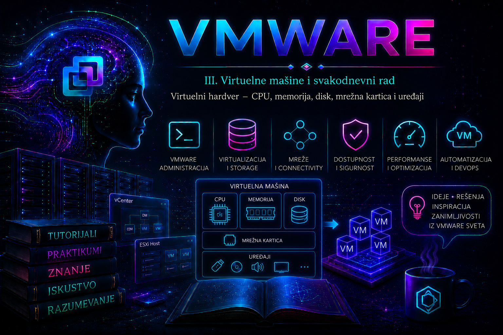

VMware

U prethodnoj lekciji kreirana je virtuelna mašina i donete su prve odluke o njenom smeštaju, operativnom sistemu, mreži i disku. Sada taj postupak posmatramo iz administratorske perspektive: virtuelna mašina nije samo skup vrednosti u čarobnjaku, već ugovor između zahteva aplikacije, mogućnosti gostujućeg operativnog sistema, ESXi raspoređivača i fizičke infrastrukture. Svaki dodeljeni vCPU, gigabajt memorije, kontroler ili mrežni adapter ima posledice po performanse, dostupnost, bezbednost, migraciju, backup i buduće održavanje.
Operativni sistem gosta uglavnom ne upravlja neposredno fizičkim procesorom, RAM-om, storage kontrolerom i mrežnom karticom hosta. ESXi mu izlaže standardizovane ili paravirtuelizovane uređaje, a VMkernel njihove zahteve preslikava na fizičke resurse. Zbog tog sloja apstrakcije workload može da se premesti na kompatibilan drugi host bez ponovne instalacije operativnog sistema. Izuzeci postoje kod direktnog prosleđivanja uređaja, kao što su DirectPath I/O i određene vGPU konfiguracije, jer tada VM postaje čvršće vezan za konkretan hardver i može izgubiti neke mogućnosti migracije, snapshot-a ili suspendovanja.
Konfiguracija VM-a kao skup povezanih datoteka i objekata
Virtuelni hardver nije jedna datoteka. Inventarski objekat VM-a upućuje na konfiguraciju, virtuelne diskove i prateće datoteke na datastore-u. Datoteka .vmx čuva konfiguracione parametre; VMDK se u praksi sastoji od descriptor datoteke i backing podataka, čiji fizički format zavisi od datastore-a i načina provisioning-a; .nvram čuva stanje BIOS/UEFI firmware-a; a swap, snapshot i log datoteke nastaju prema stanju i životnom ciklusu VM-a. Administrator ne treba ručno da menja ili briše ove datoteke dok je VM registrovan i aktivan. Izmene se obavljaju kroz vSphere Client, podržani API ili VCF PowerCLI, osim kada zvanična procedura za oporavak izričito zahteva rad na nivou datoteka.
| Komponenta | Šta gost vidi | Ključna administratorska odluka | Najčešći rizik |
|---|---|---|---|
| vCPU | Socket-e i logičke procesore | Broj vCPU, topologija, reservation/shares/limit, Hot Add | Oversizing, CPU Ready i nepovoljna vNUMA topologija |
| Virtuelna memorija | RAM dostupan OS-u | Kapacitet, reservation/shares/limit, Hot Add | Guest swapping ili host reclamation/swap zbog pritiska memorije |
| Virtuelni disk | Blok uređaj | Kapacitet, format, datastore, kontroler i SCSI/NVMe čvor | Nedostatak prostora, latencija, pogrešno proširenje ili snapshot lanac |
| vNIC | Mrežni adapter | Tip adaptera, port group, povezivanje i MAC politika | Pogrešan VLAN/port group, nedostajući drajver ili prekid veze |
| Firmware i vTPM | BIOS/UEFI, Secure Boot i TPM 2.0 | Boot režim, key provider i oporavak ključeva | VM koji se ne podiže ili je nečitljiv bez ključa |
| Pomoćni uređaji | CD/DVD, USB, serial, video i PCI uređaji | Da li su stvarno potrebni i da li ograničavaju mobilnost VM-a | Bezbednosna površina i blokirana migracija |
Virtuelni procesor: veličina, topologija i raspoređivanje
Jedan vCPU predstavlja jedan logički procesor vidljiv gostu. VMkernel CPU Scheduler raspoređuje njegovo izvršavanje na raspoložive fizičke logičke procesore hosta; vCPU nije trajno vezan za jedno fizičko jezgro osim ako nije primenjena posebna affinity konfiguracija, koja se u uobičajenim vSphere klasterima izbegava jer može ograničiti DRS i vMotion. Ukupan broj vCPU dobija se množenjem broja virtuelnih socket-a i jezgara po socket-u.
1 socket × 4 cores per socket = 4 vCPU
2 sockets × 2 cores per socket = 4 vCPUIsti zbir ne znači nužno isto ponašanje. Gostujući OS, aplikaciono licenciranje, fizička NUMA topologija hosta i vNUMA prezentacija mogu reagovati na oblik topologije. Zato ne postoji univerzalno pravilo da je uvek bolje imati što manje socket-a. Početna konfiguracija treba da bude najmanja koja zadovoljava dokumentovane potrebe workload-a, usklađena sa preporukama proizvođača aplikacije i VMware Compatibility Guide-om, a zatim potvrđena metrikama. Dodavanje vCPU „za svaki slučaj” može povećati vreme čekanja da scheduler obezbedi izvršne resurse i podići CPU Ready bez povećanja korisnog rada.
- Usage pokazuje koliko procesorskog kapaciteta VM zaista koristi, ali se ne tumači samostalno.
- CPU Ready označava vreme u kojem je vCPU bio spreman, ali je čekao fizički procesor. Trajno povišena vrednost zahteva korelaciju sa opterećenjem hosta, veličinom VM-a i vNUMA rasporedom.
- Co-stop može ukazati da široka SMP virtuelna mašina teško koordinira izvršavanje svojih vCPU-a.
- Reservation garantuje minimum fizičkog CPU kapaciteta, Shares određuju relativni prioritet samo u konkurenciji, a Limit postavlja gornju granicu i može izazvati veštačko usko grlo.
CPU Hot Add omogućava dodavanje vCPU dok VM radi ako ga podržavaju verzija virtuelnog hardvera i guest OS. Međutim, njegovo omogućavanje može deaktivirati vNUMA prezentaciju, pa nije automatski dobra produkciona postavka za velike baze podataka i druge NUMA-osetljive workload-e. CPU se uobičajeno ne može smanjiti dok VM radi. Pre promene proveravaju se podrška gosta, vendor pravila, licenciranje, trenutna topologija i bazne metrike; posle promene OS mora da vidi novi procesor, a performanse se ponovo mere.
Virtuelna memorija i pritisak na hostu
Konfigurisana memorija je kapacitet koji guest OS vidi, ali njeno ponašanje zavisi od fizičke memorije hosta, rezervacije i pritiska celog klastera. Reservation garantuje fizičku memoriju VM-u i povećava njegov admission-control zahtev; Shares određuju relativni prioritet pri konkurenciji; Limit sprečava VM da koristi memoriju iznad granice i može izazvati ozbiljno swapping ponašanje čak i kada host ima slobodan RAM. Zbog toga se memory limit ispod konfigurisanog kapaciteta koristi samo sa jasnim razlogom i dokumentovanim posledicama.
Kada fizička memorija postane oskudna, ESXi može koristiti transparent page sharing u dozvoljenim okolnostima, ballooning preko drajvera iz VMware Tools-a, memory compression i na kraju VMkernel swap. Ballooning traži od gosta da oslobodi stranice i zato može podstaći guest OS da sam bira šta će izbaciti iz memorije; host swapping nema tu semantičku informaciju i obično je skuplji. Administrator zato koreliše consumed, active, balloon, compression i swap metrike sa guest metrikama. Visok guest swap nije isto što i ESXi swap, a nizak active nije sam po sebi dokaz da je memorija bezbedno smanjiva.
Memory Hot Add zahteva podršku virtuelnog hardvera i gosta i najčešće se omogućava dok je VM isključen. Dodata memorija može biti vidljiva OS-u, ali aplikacija možda neće automatski iskoristiti novi kapacitet. Smanjenje RAM-a obično zahteva gašenje. Promena se zato planira sa vlasnikom aplikacije, proverava se NUMA efekat i validira na nivou vSphere-a, OS-a i aplikacije.
Virtuelni disk, provisioning i put I/O zahteva
Guest OS vidi virtuelni disk kao blok uređaj, dok ESXi održava njegov backing na VMFS-u, NFS-u, vSAN-u ili drugom podržanom datastore-u. VMDK nije „samo jedna velika datoteka” u svim formatima i situacijama. Pored osnovnog diska mogu postojati snapshot delta datoteke; njih ne treba brisati ručno. Provisioning određuje kada se prostor rezerviše i kako se disk ponaša, ali izbor mora pratiti mogućnosti konkretnog datastore-a i storage politike.
| Format | Karakteristika | Primena i oprez |
|---|---|---|
| Thin | Prostor raste kako se blokovi upisuju | Efikasna iskorišćenost, ali zahteva alarmiranje i praćenje stvarne potrošnje; datastore exhaustion može zaustaviti VM-ove. |
| Thick Lazy Zeroed | Nominalni prostor je alociran, blokovi se nuliraju pri prvom upisu | Predvidljiv kapacitet; prvi upis u nenuliran blok ima dodatni rad. |
| Thick Eager Zeroed | Prostor je alociran i blokovi su unapred nulirani | Koristi se kada to zahtevaju workload ili podržana funkcija; inicijalno kreiranje traje duže i troši pun kapacitet. |
Proširenje VMDK-a je state-changing operacija u dva sloja: prvo se povećava virtuelni disk u vSphere-u, zatim particija, LVM/PV ili filesystem u guest OS-u. Samo prvi korak ne daje aplikaciji novi slobodan prostor. VMDK se ne može jednostavno smanjiti kroz vSphere Client; bezbedan postupak obično podrazumeva novi manji disk, migraciju podataka i provereni backup. Pre proširenja proveravaju se datastore kapacitet, snapshot-i, backup podrška, maksimalna veličina, particiona šema i plan rollback-a.
Virtuelni storage kontroleri
Kontroler određuje kako guest šalje I/O zahteve. LSI Logic SAS je široko kompatibilan izbor za mnoge serverske goste. VMware Paravirtual SCSI (PVSCSI) je paravirtuelizovan kontroler projektovan za visoku propusnost i niži CPU overhead pri intenzivnom I/O-u, ali zahteva odgovarajući drajver, najčešće kroz VMware Tools ili instalacioni medij. Virtuelni NVMe nudi moderan interfejs i može biti dobar izbor za podržane novije goste. „Noviji” ne znači automatski „brži” za svaki workload: odluka zavisi od podrške OS-a, drajvera, queue ponašanja, storage backend-a i merljivog profila aplikacije.
Promena kontrolera boot diska bez unapred učitanog drajvera može dovesti do toga da OS više ne pronađe sistemski disk. Bezbedan laboratorijski obrazac je dodati novi kontroler i mali privremeni disk, podići VM da gost učita drajver, ugasiti VM, tek zatim pažljivo premestiti disk na novi kontroler i proveriti boot. U produkciji se pre toga pravi podržan backup i proverava vendor procedura; snapshot nije zamena za backup.
Virtuelna mrežna kartica
vNIC povezuje VM sa standardnim ili distribuiranim port group objektom, koji dalje određuje VLAN i mrežne politike. E1000/E1000E emulira poznat hardver i može biti koristan tokom instalacije starijih gostiju, ali VMXNET3 je preporučeni paravirtuelizovani adapter za podržane moderne operativne sisteme zbog performansi i naprednih mogućnosti. VMXNET3 zahteva odgovarajući drajver; njegova dostupnost i puna funkcionalnost obično se obezbeđuju VMware Tools paketom ili drajverom koji već postoji u OS-u. VMXNET2 je nasleđen i ne bira se za nove VM-ove.
Zamena tipa adaptera nije bezazleno „preimenovanje”: gost može novi adapter prepoznati kao nov uređaj, promeniti ime interfejsa ili izgubiti statičku IP konfiguraciju. Bezbedan postupak beleži MAC i IP podatke, obezbeđuje konzolni pristup, dodaje novi adapter na odgovarajuću port group, instalira/proverava drajver, prenosi konfiguraciju, testira putanju i tek onda uklanja stari adapter. Opcije Connected i Connect at power on nisu isto; prva opisuje trenutno stanje, a druga ponašanje pri sledećem podizanju.
Firmware, Secure Boot i virtuelni TPM
BIOS i UEFI inicijalizuju virtuelni hardver pre pokretanja OS-a. UEFI je uobičajen izbor za savremene sisteme i preduslov je za UEFI Secure Boot. Promena firmware režima nakon instalacije može učiniti sistem nepodiznim ako boot disk, particiona tabela i boot loader nisu pripremljeni za novi režim. Secure Boot proverava potpisane komponente boot lanca; pre uključivanja proveravaju se kompatibilnost OS-a, boot loader-a, kernel modula i VMware Tools-a.
vTPM pruža TPM 2.0 funkcije gostu, ali nije običan uklonjivi uređaj. U vSphere okruženju zahteva konfigurisan i dostupan Key Provider i odgovarajuće licencne mogućnosti za kriptografske operacije. Native Key Provider ili standardni KMS mora biti propisno zaštićen i bekapovan; gubitak ključa može onemogućiti pristup VM-u. vTPM se koristi za Windows 11, BitLocker i zaštitu tajni, ali UEFI Secure Boot i vTPM ostaju različite kontrole. Pre dodavanja ili uklanjanja vTPM-a beleži se stanje BitLocker-a/aplikacije, proverava key provider i testira oporavak. Ključevi se ne čuvaju u tiketima ili dokumentaciji otvorenog pristupa.
CD/DVD, USB, video i direktno prosleđeni uređaji
ISO slika može biti na datastore-u ili u Content Library-ju, a pristup ISO-u sa administratorske radne stanice zavisi od klijenta i sesije. Posle instalacije uređaj treba odvezati ili bar isključiti opciju povezivanja pri podizanju: vezan lokalni ili host uređaj može blokirati vMotion, a boot sa starog ISO-a može izazvati zabunu ili bezbednosni incident. Nepotrebni USB, serial, parallel i drugi uređaji povećavaju površinu napada i broj zavisnosti.
DirectPath I/O, SR-IOV, vGPU i slične mogućnosti koriste se samo kada je poslovna korist jasna i kada su host, firmware, drajver, guest OS i licenca međusobno podržani. One mogu ograničiti vMotion, HA ponašanje, suspendovanje, snapshot ili backup. Pre produkcione primene dokumentuju se hardware affinity, rezervni host, postupak održavanja i način oporavka ako uređaj ili drajver otkaže.
Hot Add i Hot Plug: mogućnost nije isto što i preporuka
| Promena | Dok VM radi | Važna ograničenja i validacija |
|---|---|---|
| Dodavanje vCPU | Moguće kada je CPU Hot Add unapred omogućen i gost podržava | Proveriti vNUMA posledice, OS i aplikacionu vidljivost. |
| Smanjenje vCPU | Uobičajeno nije moguće | Planirati gašenje i proveriti licenciranje/aplikaciju. |
| Dodavanje RAM-a | Moguće kada je Memory Hot Add omogućen i podržan | Proveriti da li OS i aplikacija koriste novi kapacitet. |
| Smanjenje RAM-a | Uobičajeno nije moguće | Gašenje; rizik od nedovoljnog kapaciteta posle promene. |
| Novi VMDK | Najčešće moguće | Guest mora otkriti uređaj; particionisanje i filesystem su zaseban korak. |
| Proširenje VMDK-a | Često moguće, ali zavisi od stanja i podrške | Snapshot-i, datastore prostor i guest postupak mogu ograničiti operaciju. |
| Novi vNIC | Najčešće moguće | Proveriti drajver, port group, IP konfiguraciju i aplikacionu vezu. |
VM hardware compatibility i verzijski okvir
VM hardware compatibility level određuje skup virtuelnih uređaja, granice konfiguracije i minimalnu ESXi generaciju na kojoj VM može da radi. To nije isto što i verzija VMware Tools-a niti verzija guest OS-a. VM sa starijim kompatibilnim nivoom može normalno raditi na novijem ESXi hostu; nadogradnja se radi kada je potrebna konkretna nova funkcija ili podrška, a ne samo zato što postoji noviji nivo.
U okruženju sa više generacija hostova bira se nivo kompatibilan sa najstarijim hostom na koji VM mora da se migrira ili oporavi. Pre nadogradnje proveravaju se VMware Compatibility Guide, interoperability matrice, backup/replication alat, DR lokacija i vendor appliance dokumentacija. Broadcom posebno upozorava da se virtuelni hardver VMware appliance uređaja, kao što su vCenter i drugi fabrički appliance sistemi, ne nadograđuje samoinicijativno mimo njihove zvanične procedure. Upgrade hardware compatibility vSphere Client tretira kao jednosmernu operaciju bez ugrađenog downgrade rollback-a; zato se prvo ažuriraju VMware Tools kada je to preporučeno, pravi provereni backup, testira aplikacija i planira povratak restauracijom ili drugim podržanim putem.
Read-only inventar: vSphere Client, ESXi Shell i VCF PowerCLI
Najbezbednija početna dijagnostika ne menja stanje. U vSphere Client-u administrator otvara VM, zatim Summary, Configure > VM Hardware, Monitor > Performance, Tasks and Events i, po potrebi, VMware Tools/guest podatke. Događaji moraju biti vremenski korelisani sa promenom i simptomom. Na ESXi Shell/SSH pristup se uključuje privremeno i prema bezbednosnoj politici; komande ispod čitaju stanje i izvršavaju se nalogom sa odgovarajućim host privilegijama.
# Read-only: inventar registrovanih VM-ova i njihovih VMID vrednosti
vim-cmd vmsvc/getallvms
# Read-only: uključeni VM procesi na konkretnom ESXi hostu
esxcli vm process list
# Read-only: fizički CPU, memorija, datastore-i i fizički NIC-evi hosta
esxcli hardware cpu list
esxcli hardware memory get
esxcli storage filesystem list
esxcli network nic list
# Interaktivni read-only pregled performansi; izlazak tasterom q
esxtop
Ove host komande ne prikazuju sve informacije istog nivoa: esxcli network nic list prikazuje fizičke adaptere hosta, ne vNIC-eve VM-a; esxcli storage filesystem list prikazuje mountovane datastore filesystem-e, ne guest diskove. Za konfiguraciju VM-a koriste se vSphere Client/API ili PowerCLI. U esxtop su korisni prikazi c za CPU, m za memoriju, d/u/v za storage slojeve i n za mrežu; nalaz se tumači uz vremenski interval i baznu liniju, ne na osnovu jednog uzorka.
# Read-only: pokrenuti u PowerShell-u sa instaliranim VCF PowerCLI modulima.
# Nalog treba da ima samo potrebne read privilegije za inventarski pregled.
Connect-VIServer -Server vcsa.lab.local
$vm = Get-VM -Name 'APP01'
$vm | Select-Object Name, PowerState, NumCpu, MemoryGB, Version
Get-HardDisk -VM $vm | Select-Object Name, CapacityGB, StorageFormat, Filename
Get-NetworkAdapter -VM $vm | Select-Object Name, Type, NetworkName, MacAddress, ConnectionState
Get-ScsiController -VM $vm | Select-Object Name, Type, BusSharingMode
# Korelacija poslednjih promena i grešaka za izabrani VM
Get-VIEvent -Entity $vm -Start (Get-Date).AddHours(-2) -MaxSamples 500 |
Sort-Object CreatedTime |
Select-Object CreatedTime, UserName, FullFormattedMessage
Disconnect-VIServer -Server vcsa.lab.local -Confirm:$false
PowerCLI menja stanje samo kada se pozovu cmdlet-i kao što su Set-VM, New-HardDisk, Set-HardDisk, New-NetworkAdapter ili Set-NetworkAdapter. Takve komande se pre produkcije proveravaju u laboratoriji, ograničavaju preciznim izborom objekta i, gde je podržano, prvo pokreću sa -WhatIf. Nikada se ne prosleđuje širok rezultat Get-VM state-changing komandi bez pregleda ciljne liste.
Praktikum: inventar, kontrolisana promena i oporavak
Cilj i kontekst. Tim preuzima VM APP01 bez pouzdane dokumentacije. Potrebno je napraviti dokaziv inventar, proceniti da li je konfiguracija primerena i bez prekida dodati laboratorijski data disk. Druga vežba simulira mrežnu grešku bez brisanja adaptera, kako bi se uvežbao incident tok.
Topologija i preduslovi. Potrebni su vCenter, jedan laboratorijski ESXi host, datastore sa najmanje 20 GB bezbednog slobodnog prostora, port group LAB-SERVER, VM APP01 sa VMware Tools-om i konzolni pristup guest OS-u. Koristi se namenski nalog sa pravima za pregled; za dodavanje diska i promenu vNIC veze privremeno se koristi nalog sa minimalnim VM configuration pravima. Pre početka proveriti da VM nije deo produkcije, da nema aktivan backup/snapshot zadatak i da alarmi datastore-a nisu aktivni.
Vežba 1 – bazna linija virtuelnog hardvera
- U vSphere Client-u zabeležiti power state, host, datastore, compatibility, guest OS, VMware Tools status, vCPU/RAM, diskove, kontrolere, vNIC i firmware.
- U Monitor > Performance pregledati najmanje reprezentativan poslovni period, a ne samo trenutni real-time uzorak. Zabeležiti CPU usage/ready, memorijski balloon/swap, disk latency i mrežne greške/drop kada su dostupni.
- U Tasks and Events proveriti poslednje konfiguracione promene i identitet naloga koji ih je izvršio.
- Pokrenuti prethodni read-only PowerCLI blok i sačuvati izlaz u radnu evidenciju bez tajni ili akreditiva.
- U guest OS-u potvrditi broj CPU-a, RAM, diskove i mrežni adapter. Razlika između vCenter i guest prikaza postaje hipoteza za proveru drajvera, Hot Add podrške ili OS rescan-a, ne razlog za nasumičnu promenu.
Očekivani rezultat i kriterijum završetka. Postoji jedna tabela baznog stanja sa vSphere i guest dokazima, vremenskim periodom metrika i poslednjim relevantnim događajima. Nije promenjeno stanje VM-a. Svaka preporuka za resize sadrži metriku, period posmatranja, zahtev aplikacije i plan promene.
Vežba 2 – bezbedno dodavanje laboratorijskog diska
Rizik. State-changing operacija. Pogrešan VM, datastore ili veličina mogu ugroziti kapacitet; inicijalizacija pogrešnog diska u guest OS-u može uništiti podatke. Pre klika proveriti identitet VM-a i postojeće diskove najmanje dva puta.
- Proveriti datastore free space, aktivne alarme, snapshot-e i backup prozor. Zabeležiti početno stanje.
- U Edit Settings > Add New Device > Hard Disk dodati disk od 10 GB na postojeći podržani SCSI kontroler. Za laboratoriju izabrati Thin Provision ako se kapacitet aktivno prati. Ne menjati boot disk.
- Pre potvrde proveriti datastore, disk mode, virtual device node i očekivanu promenu. Sačuvati task rezultat i event.
- U guest OS-u izvršiti rescan, identifikovati novi disk po veličini i serijskom/putanjskom kontekstu, zatim ga inicijalizovati samo kada je identitet nesumnjiv. Kreirati filesystem i mount prema pravilima tog OS-a.
- Upisati test datoteku, pročitati je i proveriti da filesystem ostaje pravilno mountovan posle kontrolisanog guest restart-a, ako je restart dozvoljen u laboratoriji.
# State-changing laboratorijski ekvivalent GUI koraka.
# Najpre potvrditi da promenljiva sadrži tačno jedan VM.
Connect-VIServer -Server vcsa.lab.local
$vm = Get-VM -Name 'APP01'
if (@($vm).Count -ne 1) { throw 'Očekivan je tačno jedan VM APP01.' }
# Pregled nameravane promene; -WhatIf je koristiti kada ga cmdlet/verzija podržava.
New-HardDisk -VM $vm -CapacityGB 10 -StorageFormat Thin -WhatIf
# Tek posle nezavisne provere cilja ukloniti -WhatIf u laboratoriji.
# New-HardDisk -VM $vm -CapacityGB 10 -StorageFormat Thin
Get-HardDisk -VM $vm | Select-Object Name, CapacityGB, StorageFormat, Filename
Disconnect-VIServer -Server vcsa.lab.local -Confirm:$falseRollback. Ako disk još nema podatke, prvo ga unmountovati i ukloniti iz guest konfiguracije, zatim u vSphere-u ukloniti tačno novododati 10 GB disk. Razlikovati uklanjanje uređaja iz VM-a od brisanja backing datoteke sa datastore-a; brisanje je destruktivno i dozvoljeno je samo nakon provere identiteta i potvrde da nema potrebnih podataka. Ako je aplikacija već koristila disk, rollback je migracija/restore podataka prema odobrenom planu, a ne trenutno brisanje.
Vežba 3 – simulacija pogrešno odvezanog vNIC-a i troubleshooting
Simptom i obim. U laboratoriji isključiti opciju Connected na vNIC-u VM-a, ali zadržati adapter i njegovu konfiguraciju. Posmatrati da li je nedostupan samo APP01, dok host, port group i druge VM-ove ne treba menjati. Konzola mora ostati dostupna.
- Pre simulacije zabeležiti port group, MAC, IP, gateway i uspešan test povezivosti. Otvoriti konzolu.
- Odvezati vNIC kroz Edit Settings. Ovo je kontrolisana, lako reverzibilna greška; ne brisati adapter i ne menjati distributed switch.
- Prikupiti dokaz: power state, vNIC Connected/Connect at power on, recent tasks/events, guest link stanje i vreme početka simptoma.
- Formulisati hipotezu „virtuelni kabl je odvezan”, potvrditi je poređenjem sa baznom linijom i vratiti Connected.
- Validirati link u guest OS-u, ping ka gateway-u i najmanje jedan aplikacioni test. Proveriti da nema novih alarma i dokumentovati ko je, kada i zašto izvršio promenu.
Razdvajanje uzroka. Neposredni tehnički uzrok je odvezan vNIC. Osnovni uzrok u stvarnom incidentu može biti ručna promena bez change kontrole ili automatizacija sa pogrešnim ciljem. Privremeno rešenje je ponovno povezivanje; trajna mera su najmanje privilegije, review automatizacije, audit događaji i kontrolisana promena.
Tipične greške i dijagnostičke grane
| Simptom | Prvi dokazi | Verovatan uzrok | Bezbedna korekcija |
|---|---|---|---|
| Novi disk nije vidljiv u OS-u | Task/event, VM hardware, kontroler, guest device scan | Nije urađen rescan, nedostaje drajver ili disk nije dodat pravom VM-u | Ne restartovati nasumično; potvrditi konfiguraciju, drajver i izvršiti podržan rescan. |
| VM se ne podiže posle promene kontrolera | Console poruka, firmware boot redosled, vmware.log, recent task | Boot disk je premešten na kontroler bez guest drajvera | U maintenance prozoru vratiti prethodni controller/node; zatim pripremiti drajver kontrolisanim postupkom. |
| VM nema mrežu posle zamene adaptera | vNIC connection, port group/VLAN, MAC, guest ime interfejsa i IP | Novi uređaj, pogrešna port group ili nedostajući VMXNET3 drajver | Konzolom vratiti stari adapter ili ispraviti novu konfiguraciju; validirati celu putanju. |
| Resize CPU-a nije poboljšao rad | CPU usage/ready/co-stop, host contention, aplikacione metrike | Oversizing ili usko grlo nije CPU | Vratiti se na baznu liniju, identifikovati pravi resurs i resize raditi uz aplikacioni test. |
| vTPM opcija nije dostupna ili VM ne može da se podigne | Key Providers status, licenca, Tasks/Events i vmware.log | Nema default/dostupnog key provider-a, ključ nije bekapovan/dostupan ili licenca ne podržava operaciju | Ne uklanjati nasumično vTPM; obnoviti key-provider dostupnost prema zvaničnoj proceduri. |
| Datastore se puni iako je disk thin | Datastore capacity alarm, VMDK rast, snapshot-i i backup task | Stvarni upisi, nekonsolidovani snapshot ili nedovoljno capacity planiranje | Zaustaviti nekritičan rast, obezbediti kapacitet i konsolidovati samo nakon provere prostora i backup-a. |
Za VM-specifične probleme relevantan je vmware.log u direktorijumu VM-a na datastore-u; nastaje na ESXi hostu i sadrži poruke virtuelnog uređaja i VMX procesa. Za host management operacije korelišu se /var/log/hostd.log i, kada je operacija poslata iz vCenter-a, vCenter događaji i vpxa.log. Log se pregleda za uzak vremenski interval oko simptoma, uz ime/VMID i karakteristične izraze kao što su scsi, nvme, ethernet, Device, Failed ili Encryption. Jedna poruka bez konteksta nije dokaz osnovnog uzroka.
# Read-only laboratorijska pretraga VM loga na ESXi hostu.
# Putanju prvo potvrditi iz vim-cmd vmsvc/getallvms; ne pretpostavljati datastore.
grep -Ei 'scsi|nvme|ethernet|device|failed|encryption' /vmfs/volumes/DATASTORE/APP01/vmware.log | tail -n 100
# Read-only korelacija host management događaja u istom vremenskom prozoru
grep -Ei 'APP01|reconfig|failed|error' /var/log/hostd.log | tail -n 100Administratorske prakse
- Poći od zahteva i metrike, ne od maksimalne dostupne vrednosti; right-sizing je kontinuiran proces.
- Voditi evidenciju vlasnika, namene, CPU/RAM baseline-a, diskova, mreža, compatibility nivoa i poslednje odobrene promene.
- Koristiti VMXNET3, PVSCSI ili NVMe samo kada guest, drajver i workload podržavaju izbor; kompatibilnost ima prednost nad pretpostavkom.
- Ne postavljati CPU ili memory limit bez dokumentovanog razloga i testa posledica.
- Pre promene boot kontrolera, firmware-a, vTPM-a ili hardware compatibility nivoa obezbediti podržan backup i realan plan oporavka.
- ISO i nepotrebne uređaje odvezati; passthrough koristiti samo uz dokumentovan uticaj na vMotion, HA i backup.
- Snapshot koristiti kratkotrajno i namenski, nikada kao zamenu za backup niti kao neodređen rollback za hardverske promene.
- Svaku promenu validirati na tri nivoa: vSphere task/event i konfiguracija, guest OS uređaj/drajver, zatim aplikaciona funkcija.
Završna kontrolna tačka
- Mogu da objasnim put zahteva od virtuelnog uređaja, preko VMkernel-a, do fizičkog resursa.
- Mogu da izaberem početni vCPU/RAM bez oversizing-a i da odluku proverim CPU Ready, co-stop, balloon i swap dokazima.
- Razlikujem Thin, Thick Lazy Zeroed i Thick Eager Zeroed i umem da objasnim rizik kapaciteta i korake guest proširenja.
- Prepoznajem posledice izbora LSI Logic SAS, PVSCSI, NVMe, E1000E i VMXNET3 uređaja.
- Razlikujem UEFI, Secure Boot i vTPM i znam zašto je key-provider backup uslov oporavka.
- Umim da napravim read-only inventar kroz Client, ESXi Shell i VCF PowerCLI bez mešanja fizičkih host NIC-eva i VM adaptera.
- Pre state-changing operacije mogu da definišem cilj, rizik, pre-check, očekivani rezultat, validaciju i rollback.
- Mogu da dijagnostikujem nestali disk ili mrežu od najmanje invazivne provere ka korekciji i da nalaz potkrepim događajima i logovima.
Zaključak
Virtuelni hardver daje administratoru izuzetnu fleksibilnost, ali svaka laka promena u interfejsu ostaje stvarna infrastrukturna odluka. Pouzdan rad ne počiva na tome da VM dobije što više resursa ili najnoviji tip svakog uređaja, već da konfiguracija bude podržana, merljiva, minimalno dovoljna i usklađena sa aplikacijom, gostom i klasterom. Administrator zato prvo prikuplja baznu liniju i poslednje promene, zatim formuliše hipotezu, menja samo ono što je opravdano, proverava rezultat od vSphere-a do aplikacije i čuva dokaziv put oporavka. To razumevanje priprema čitaoca za narednu lekciju o VMware Tools-u, gde se veza između hipervizora, drajvera i gostujućeg operativnog sistema obrađuje detaljno.